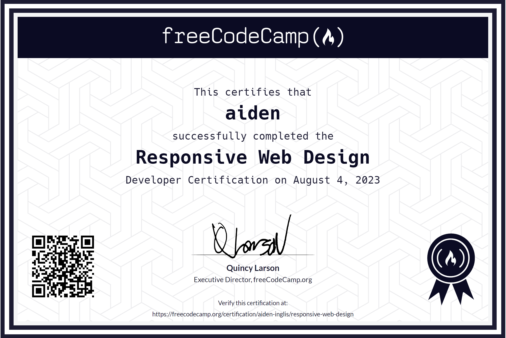

My Skills
Below are some of the skills I have learned and developed before and at NMIT.
I have a certification in HTML/CSS from Freecodecamp which shows that i can proficiently practice HTML/CSS.

Below is a list of skills I have learned and developed at NMIT.
- How to use Figma, a fidelity wireframe software.
- How to build a computer using just components - this consists of knowledge of safety practices when working on electrical hardware.
- How to Use Hyper V Virtual machine software and how to have many different operating systems on the computer at once.
- How to code JavaScript and write functions that make a Patient healthcare management system using the command line in visual studio.
Below is a list of skills I have learned and developed before NMIT.
- How to code in Python using an imported easy gui.
- How to code in HTML and CSS.
- Leadership roles in Scouts as head pack leader of the richmond scout group.
- Medical training which consists of sling practices, bandaging and wrapping and CPR.
- Wilderness survival Skills, water filtration, safe river crossing, makeshift shelters and compass orientation.
- Skills like tactics and methods in rugby with 13 years of experience of games and trainings.
- Proficient in using excel spreadsheets as i did a paper on researching every aspect of the software.